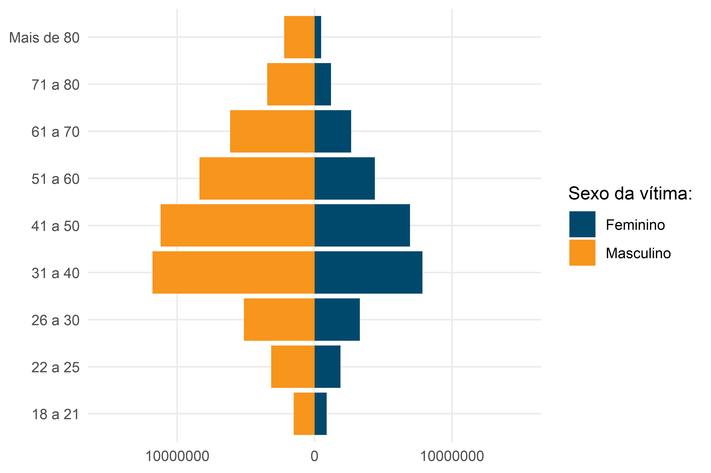

O presente relatório inclui um conjunto de dados ilustrando algumas diferenças entre a presença das mulheres e dos homens no trânsito brasileiro. A seguir, a Seção 2 inclui dados sobre as vítimas fatais no trânsito brasileiro; a Seção 3 traz dados sobre a quantidade de condutores habilitados nos últimos anos e a Seção 4 apresenta dados sobre condutores envolvidos em sinistros de trânsito em rodovias federais.
Todos os dados e código utilizado nesse relatório estão disponibilizados no respectivo repositório do GitHub do Observatório.
2 Vítimas fatais
Os dados sobre as vítimas fatais no trânsito brasileiro foram extraídas do Sistema de Informações de Mortalidade (SIM) do MINISTÉRIO DA SAÚDE (2024), considerando o ano de 2022 – o último com os dados consolidados até a publicação deste conteúdo. Os dados foram coletados com auxílio do pacote microdatasus(SALDANHA; BASTOS; BARCELLOS, 2019) e armazenados pelo pacote roadtrafficdeaths(SANTOS; SARAIVA, 2023).
2.1 Pirâmide etária
O gráfico da Figura 1 a seguir apresenta a pirâmide etária das vítimas fatais no trânsito brasileiro em 2022, agrupados a partir de duas características: faixa etária e sexo da vítima.
Das 33894 vítimas fatais de 2022, 17% eram do sexo feminino. A principal faixa etária das vítimas do sexo feminino é a de idade entre 20 e 24 anos, com 568 óbitos.
Figura 1: Pirâmide etária das vítimas fatais no trânsito em 2022
<<<<<<< HEAD
=======
>>>>>>> main
2.2 Modo de transporte e faixa etária
Os gráficos da Figura 2 e Figura 3 apresentam a quantidade de vítimas fatais, com agrupamento por faixa etária e modo de transporte da vítima. Considerando as vítimas do sexo feminino, o principal grupo de vítimas são as ocupantes de motocicleta com idade entre 20 e 24, somando uma quantidade de 245 óbitos. Outro grupo de destaque são as ocupantes de automóvel entre 25 e 34 anos e as pedestres acima de 60 anos de idade.
Essa seção contém a apresentação de alguns dados relacionados à quantidade de condutores habilitados, registrados pelo Registro Nacional de Condutores Habilitados (RENACH). Todos os dados apresentados aqui foram extraídos do RENACH (Ministério dos Transportes 2024).
>>>>>>> main
3.1 Evolução
Considerando o período de 6 anos entre 2018 e 2023, houve um aumento de aproximadamente 20% na quantidade de condutoras habilitadas. Considerando o mesmo período, houve um aumento de aproximadamente 13% na quantidade de condutores habilitados (Figura 4).
Figura 4: Quantidade total de condutores por ano
A Figura 5 apresenta apenas a quantidade de novos condutores registrados, considerando o período entre 2019 e 2023. De modo absoluto, a quantidade de novos condutores do sexo masculino ainda é maior do que a quantidade de condutores do sexo feminino.
Figura 5: Quantidade de novos condutores registrados por ano
A análise da quantidade de condutores ao longo dos anos também é possível de ser feita com base nas categorias de cada CNH (Figura 6). Tanto para os homens quanto as mulheres, há um aumento percentual na categoria AB (Moto / Carro). No caso das condutoras, houve uma variação de 26% para 29%. A categoria B representa uma maior proporção considerando os condutores do sexo feminino. Em 2018, essa categoria representava quase 70%, com uma redução para 67% em 2023.
Figura 6: Quantidade percentual de condutores por categoria da CNH
Observações:
A Categoria “X - Ciclomotor” foi desconsiderada na análise
A Categoria C inclui também as categorias AC e XC
A Categoria D inclui também as categorias AD e XD
A Categoria E inclui também as categorias AE e XE
3.2 Cenário atual
Considerando apenas a quantidade de condutores habilitados em 2023, a Figura 7 apresenta esses valores, classificados por sexo do condutor e faixa etária. Ao todo, 36% dos condutores são do sexo feminino, com a maior parte se encontrando nas faixas etárias entre 31 - 40 anos e 41 - 50 anos.
Figura 7: Quantidade de condutores por sexo e faixa etária em 2023
Os gráficos da Figura 8 e Figura 9 apresentam a quantidade proporcional de condutores, considerando a categoria da CNH e a faixa etária. No caso dos condutores do sexo masculino, a maior proporção se encontra na categoria AB (moto / carro), na faixa de idade entre 31 e 40 anos. Já no caso do sexo feminino, a maior proporção se encontra na categoria B, com idade entre 41 e 50 anos. Observa-se a baixa quantidade de habilitadas nas categorias C, D e E, em comparação com os condutores do sexo masculino.
Figura 8: Porcentagem de condutoras por tipo de CNH e faixa etária

Figura 9: Porcentagem de condutoras por tipo de CNH e faixa etária
Observações:
Valores em 0,0% representam baixas quantidades
A Categoria “X - Ciclomotor” foi desconsiderada na análise
A Categoria C inclui também as categorias AC e XC
A Categoria D inclui também as categorias AD e XD
A Categoria E inclui também as categorias AE e XE
4 Condutores envolvidos em sinistros em rodovias federais
A análise é expandida por meio do estudo de dados de sinistros em rodovias federais fornecidos pelo Portal de Dados Abertos da Polícia Rodoviária Federal (POLÍCIA RODOVIÁRIA FEDERAL, 2024). Desta forma, a base de dados agrupada por pessoa possibilita a extração dos casos de condutores envolvidos em sinistros em rodovias federais para o ano de 2023, a fim de analisar o presente cenário da segurança rodiviária em relação ao sexo das vítimas.
4.1 Transporte geral
Primeiramente, são analisadas as vítimas gerais, investigadas em função do sexo, tipo de sinistro e estado físico da vítima após o ocorrido. A Figura 4 evidencia a quantidade de sinistros conforme as variáveis contempladas pelo estudo, enquanto a Tabela 1 indica os valores totais para ambos os sexos sobre cada estado físico, bem como a taxa de óbitos sobre ao número de envolvidos totais.
Tabela 1: Tabela de estado físico de condutores totais
<<<<<<< HEAD
Estado Físico
Masculino
Feminino
=======
Sexo
Ferido
Ileso
Óbito
Total
Óbitos por N° de Envolvidos
>>>>>>> main
<<<<<<< HEAD
Ferido
42.784
6.754
Ileso
47.191
5.484
Óbito
3.343
201
Total
93.318
12.439
Óbitos por N° de Envolvidos
3,58%
1,62%
=======
Masculino
42.784
47.191
3.343
93.318
3,58%
Feminino
6.754
5.484
201
12.439
1,62%
>>>>>>> main
<<<<<<< HEAD
Observa-se a saliência da sinistralidade para o sexo masculino, com valores mais elevados em todos os aspectos em relação ao feminino, em grande parte devido a sua maior participação no trânsito. A colisão traseira e a colisão transversal aparentam ser os sinistros mais frequentes em ambos os sexos, porém a colisão frontal é claramente o tipo de sinistro mais fatal, atingindo 43,3% e 36,4% do total de óbitos registrados para mulheres e homens respectivamente.
Outra forma de analisar a influência do sexo sobre a ocorrência de certa categoria de sinistro é demonstrada na Figura 5, com a taxa de óbitos por sexo e tipo de sinistro sobre a quantidade total de vítimas:
Figura 5: Taxa de óbitos por sexo e tipo de sinistro por óbitos totais em sinistros rodoviários
4.2 Transporte de cargas
Conforme a análise de condutores totais envolvidos em sinistros, o estudo pode ser afunilado para o caso exclusivo de condutores de veículos para transporte de cargas. Logo, a Figura 6 e a Tabela 2 representam o mesmo procedimento anterior, com os dados filtrados em sinistros com condutores de caminhões e caminhões-tratores.
Os sinistros possuem um comportamento similar à análise anterior, mas há um maior destaque para o tombamento e saída de leito carroçavel por parte do masculino, sendo sinistros comuns para este tipo de modal. Para o transporte de carga, todos os sinistros femininos somam menos de 1% dos masculinos, apesar da semelhança entre as taxas de óbitos por sinistros totais.
Figura 6: Gráfico para condutores de transporte de cargas
Tabela 2: Tabela de estado físico de condutores de transporte de cargas
<<<<<<< HEAD
Estado Físico
Masculino
Feminino
=======
Sexo
Ferido
Ileso
Óbito
Total
Óbitos por N° de Envolvidos
>>>>>>> main
<<<<<<< HEAD
Ferido
5.158
54
Ileso
13.459
88
Óbito
445
3
Total
19.062
145
Óbitos por N° de Envolvidos
2,33%
2,07%
=======
Masculino
5.158
13.459
445
19.062
2,33%
Feminino
54
88
3
145
2,07%
>>>>>>> main
<<<<<<< HEAD
4.3 Transporte de passageiros
Por fim, a mesma análise pode ser aplicada ao caso de condutores de veículos para o transporte de passageiros, tendo a base de dados filtrada para o caso de condutores de ônibus e microônibus. Neste cenário, há uma drástica diminuição nos sinistros femininos observados, provalmente em razão da escassa participação de mulheres neste modal.
Em 2023, nenhuma vítima feminina foi registrada no âmbito de rodovias federais, sendo que os valores da Tabela 3 mostram como as mulheres dispõem de 98,5% menos participação nos sinistros deste ano que homens para este tipo de condução.